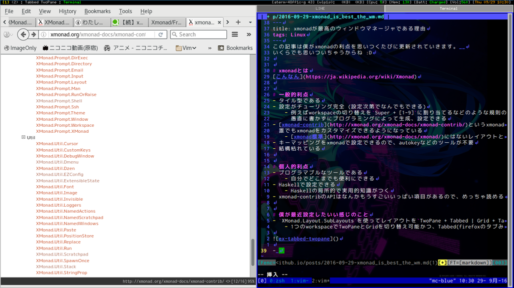

xmonadが最高のウィンドウマネージャである理由
この記事は僕がxmonadの利点を思いつくたびに更新されていきます。
いくらでも思いついちゃうからね :D
xmonadとは
一般的利点
- タイル型である
- マウスめっちゃ使わなくなる
- 設定がチューリング完全 (設定次第でなんでもできる)
- 例えばworkspaceの切り替えを
Super + [1-9]に割り当てるなどのような規則のある設定とかを、 愚直に書かずにプログラミングによって生成、設定できる
- 例えばworkspaceの切り替えを
- xmonad-contribというxmonadのアドオンがあって 誰でもxmonadをカスタマイズできるようになっている
- xmonad標準にはないレイアウトとかツールが有志によって提供されている
- キーマッピングをxmonadで設定できるので、autokeyなどのツールが不要
- Appごとのキーマッピングは…できな…い？？
- 結構枯れている
個人的利点
- プログラマブルなツールである
- 自分でどこまでも便利にできる
- Haskellで設定できる
- Haskellの局所的で実用的知識がつく
- xmonad-contribのAPIはなんかもうすごいいっぱい項目があるので、めっちゃ読める
僕が最近設定したいい感じのこと
XMonad.Layout.SubLayoutsを使ってレイアウトをTwoPane + Tabbed | Grid + Tabbedにした- 1つのworkspaceでTwoPaneとGridを切り替え可能かつ、Tabbed(firefoxのタブみたいな感じのレイアウト)と併用できる

ImageMagick, dunst, notify-send, espeakを使って、いい感じのスクリーンショットを取るやつを実装した
この記事はこちらから修正リクエストを送ることができます。
xmonadが最高のウィンドウマネージャである理由 - github
ゴミ箱ボタンの左にある、鉛筆ボタンを押してね！